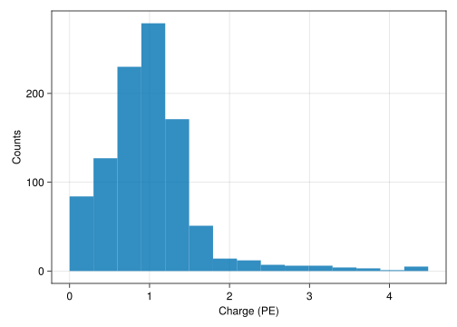

a=10.00, b=1.94, FWHM=6.0nsP-ONE PMT
This document summarizes the properties of the R14374 PMT and the digitization electronics. TODO: Add plots / analyses from Elli.
Pulse Shape
The PMT pulse shape is modelled by a gumbel distribution: \[ p(t) = \frac{1}{b} \exp \left (- \frac{(x-a)}{b} - e^{-\frac{(x-a)}{b}} \right ) \] with parameters:

Figure 1 shows the pulse shape and the filtered pulse after applying a 125Mhz low pass filter (LPF). The (unshifted) Gumbel distribution has a non-zero contribution for \(x<0\), thus the distribution is shifted by an arbitrary location parameter. This shift is later compensated in the transit time.
Transit Time
SPE Distribution
The SPE distribution is modelled as a mixture of a truncated normal distribution and an exponential distribution: \[ p(q) = a \cdot \frac{1}{\sqrt{2\pi\sigma^2}} \exp \left ( -\frac{(q-\mu)^2}{\sigma^2} \right ) + (1-a)\cdot \frac{1}{\theta}\exp \left( - \frac{q}{\theta}\right)\]
Code
lines(0:0.01:5, x -> pdf(spe_d, x),
axis=(; title="SPE Distribution", xlabel="Charge (PE)", ylabel="PDF"))
PMT Pulses
The PMT pulse amplitude (in units of PE) is drawn from the SPE distribution:
Code
charges = rand(spe_d, 1000)
hist(charges, axis=(; xlabel="Charge (PE)", ylabel="Counts"))
Waveforms
Pulse Series
Pulse series are a collection of pulses at timestamps \(t_1, \ldots, t_n\) with charges \(q_1, \ldots, q_n\). Evaluating the pulse series corresponds to the analog output signal of the PMT:
Code
pulse_series = PulseSeries([0, 5, 10], [1, 5, 1], pmt_config.pulse_model)
eval_grid = -5:0.05:25
eval_ps = evaluate_pulse_series(eval_grid, pulse_series)
fig, ax = lines(eval_grid, eval_ps, axis=(; xlabel="Time (ns)", ylabel="Amplitude (mV)"))
for (t, q) in pulse_series
lines!(ax, eval_grid, x -> q*evaluate_pulse_template(pmt_config.pulse_model, t, x))
end
figWaveforms
Waveforms are created by evaluating the pulse series with a given sampling frequency and adding gaussian white noise on top:
Code
waveform = make_waveform(pulse_series, pmt_config.sampling_freq, pmt_config.noise_amp)
lines(waveform.timestamps, waveform.values, axis=(; xlabel="Time (ns)", ylabel="Amplitude (mV)"))
Waveform digitization
Waveforms are digitized in multiple steps:
- Applying a filter (125MHz LPF) to the waveform
- Resampling the waveform with a given digitizer frequency
- Quantizing the waveform values with given digitizer levels
Code
digi_wg = digitize_waveform(
waveform,
pmt_config.sampling_freq,
pmt_config.adc_freq,
pmt_config.lp_filter,
yrange=pmt_config.adc_dyn_range,
yres_bits=pmt_config.adc_bits)
fig, ax = lines(
waveform.timestamps, waveform.values,
axis=(; xlabel="Time (ns)", ylabel="Amplitude (mV)"), label="Raw Waveform")
lines!(ax, digi_wg.timestamps, digi_wg.values, label="Digitized Waveform")
fig
Dynamic range
We can test the effect of the dynamic range on small pulses. Figure 7 shows the digitized waveform for pulses with charges [0.1, 0.2, 0.3, 0.4] PE, with 12bits in a range of (0, 1)V. Figure 8 shows the waveform with 12bits in a range of (0, 3)V
Code
pulse_series = PulseSeries([0, 20, 40, 60], [0.1, 0.2, 0.3, 0.4], pmt_config.pulse_model)
waveform = make_waveform(pulse_series, pmt_config.sampling_freq, pmt_config.noise_amp)
fig = Figure()
ax = Axis(fig[1, 1], xlabel="Time (ns)", ylabel="Amplitude (mV)")
eval_grid = -50:0.05:150
p1 = nothing
for (t, q) in pulse_series
p1 = lines!(ax, eval_grid, x -> q*evaluate_pulse_template(pmt_config.pulse_model, t, x), color=:tomato)
end
digi_wg = digitize_waveform(
waveform,
pmt_config.sampling_freq,
pmt_config.adc_freq,
pmt_config.lp_filter,
yrange=pmt_config.adc_dyn_range,
yres_bits=pmt_config.adc_bits)
p2 = lines!(ax, digi_wg.timestamps, digi_wg.values, label="Digitized Waveform", linewidth=2)
bins = adc_bins(pmt_config.adc_dyn_range, pmt_config.adc_bits)
p3 = hlines!(ax, bins[1:15], color=(:black, 0.5), linestyle=:dot, label="ADC Levels")
Legend(fig[1, 2], [p1, p2, p3], ["Pulses", "Digitized Waveform", "ADC Levels"])
fig
Code
fig = Figure()
ax = Axis(fig[1, 1], xlabel="Time (ns)", ylabel="Amplitude (mV)")
eval_grid = -50:0.05:150
p1 = nothing
for (t, q) in pulse_series
p1 = lines!(ax, eval_grid, x -> q*evaluate_pulse_template(pmt_config.pulse_model, t, x), color=:tomato)
end
digi_wg = digitize_waveform(
waveform,
pmt_config.sampling_freq,
pmt_config.adc_freq,
pmt_config.lp_filter,
yrange=(0., 3000.),
yres_bits=pmt_config.adc_bits)
p2 = lines!(ax, digi_wg.timestamps, digi_wg.values, label="Digitized Waveform", linewidth=2)
bins = adc_bins((0., 3000.), pmt_config.adc_bits)
p3 = hlines!(ax, bins[1:5], color=(:black, 0.5), linestyle=:dot, label="ADC Levels")
Legend(fig[1, 2], [p1, p2, p3], ["Pulses", "Digitized Waveform", "ADC Levels"])
fig